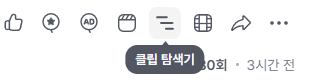

v1.8.0.0 주요 변경사항
새 기능: 클립 탐색기
(SOOP)
다시보기
플레이어 페이지의 유저 클립 버튼 우측의
클립 탐색기
버튼을 눌러 클립 탐색을 시작합니다.

설정에서 ON/OFF할 수 있습니다. (기본 ON)
자세한 소개는
여기
를 읽어 보세요
설정 화면 개선
저장 버튼이 화면 아래에 항상 보이고, 저장하지 않은 변경사항이 있으면 안내 문구가 표시됩니다.
VOD Master에 어떤 기능들이 있는지
알아보세요
.